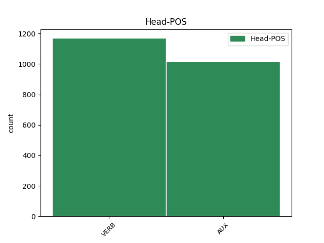
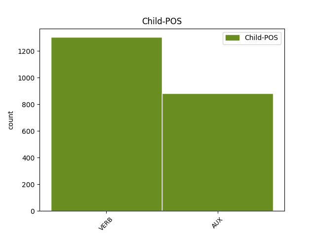

Distribution of features within this leaf



Agreement Rules sorted by frequency.
- When the dependent token is the conjunct(conj) of the head token,
1 Durante _ _ _ _ 0 _ _ _
2 il _ _ _ _ 0 _ _ _
3 terremoto _ _ _ _ 0 _ _ _
4 in _ _ _ _ 0 _ _ _
5 Iran _ _ _ _ 0 _ _ _
6 , _ _ _ _ 0 _ _ _
7 sono essere AUX VA Mood=Ind|Number=Plur|Person=3|Tense=Pres|VerbForm=Fin 0 _ _ _
8 morte _ _ _ _ 0 _ _ _
9 moltissime _ _ _ _ 0 _ _ _
10 persone _ _ _ _ 0 _ _ _
11 e _ _ _ _ 0 _ _ _
12 il _ _ _ _ 0 _ _ _
13 centro _ _ _ _ 0 _ _ _
14 storico _ _ _ _ 0 _ _ _
15 di _ _ _ _ 0 _ _ _
16 la _ _ _ _ 0 _ _ _
17 città _ _ _ _ 0 _ _ _
18 di _ _ _ _ 0 _ _ _
19 Bam _ _ _ _ 0 _ _ _
20 è essere AUX VA Mood=Ind|Number=Sing|Person=3|Tense=Pres|VerbForm=Fin 7 conj _ _
21 stato _ _ _ _ 0 _ _ _
22 completamente _ _ _ _ 0 _ _ _
23 distrutto _ _ _ _ 0 _ _ _
24 . _ _ _ _ 0 _ _ _
1 Durante _ _ _ _ 0 _ _ _
2 la _ _ _ _ 0 _ _ _
3 staffetta _ _ _ _ 0 _ _ _
4 , _ _ _ _ 0 _ _ _
5 i _ _ _ _ 0 _ _ _
6 nuotatori _ _ _ _ 0 _ _ _
7 fanno fare VERB V Mood=Ind|Number=Plur|Person=3|Tense=Pres|VerbForm=Fin 0 _ _ _
8 una _ _ _ _ 0 _ _ _
9 squadra _ _ _ _ 0 _ _ _
10 di _ _ _ _ 0 _ _ _
11 4 _ _ _ _ 0 _ _ _
12 persone _ _ _ _ 0 _ _ _
13 : _ _ _ _ 0 _ _ _
14 ogni _ _ _ _ 0 _ _ _
15 nuotatore _ _ _ _ 0 _ _ _
16 nuota nuotare VERB V Mood=Ind|Number=Sing|Person=3|Tense=Pres|VerbForm=Fin 7 parataxis _ _
17 solo _ _ _ _ 0 _ _ _
18 per _ _ _ _ 0 _ _ _
19 una _ _ _ _ 0 _ _ _
20 parte _ _ _ _ 0 _ _ _
21 di _ _ _ _ 0 _ _ _
22 il _ _ _ _ 0 _ _ _
23 percorso _ _ _ _ 0 _ _ _
24 di _ _ _ _ 0 _ _ _
25 gara _ _ _ _ 0 _ _ _
26 . _ _ _ _ 0 _ _ _
1 Non _ _ _ _ 0 _ _ _
2 è essere AUX V Mood=Ind|Number=Sing|Person=3|Tense=Pres|VerbForm=Fin 0 _ _ _
3 chiaro _ _ _ _ 0 _ _ _
4 per _ _ _ _ 0 _ _ _
5 quali _ _ _ _ 0 _ _ _
6 compagnie _ _ _ _ 0 _ _ _
7 teatrali _ _ _ _ 0 _ _ _
8 Shakespeare _ _ _ _ 0 _ _ _
9 scrisse scrivere VERB V Mood=Ind|Number=Sing|Person=3|Tense=Past|VerbForm=Fin 2 subj _ _
10 le _ _ _ _ 0 _ _ _
11 sue _ _ _ _ 0 _ _ _
12 prime _ _ _ _ 0 _ _ _
13 opere _ _ _ _ 0 _ _ _
14 . _ _ _ _ 0 _ _ _
1 Il _ _ _ _ 0 _ _ _
2 primo _ _ _ _ 0 _ _ _
3 disco _ _ _ _ 0 _ _ _
4 di _ _ _ _ 0 _ _ _
5 Norah _ _ _ _ 0 _ _ _
6 Jones _ _ _ _ 0 _ _ _
7 è _ _ _ _ 0 _ _ _
8 di _ _ _ _ 0 _ _ _
9 il _ _ _ _ 0 _ _ _
10 2002 _ _ _ _ 0 _ _ _
11 e _ _ _ _ 0 _ _ _
12 si _ _ _ _ 0 _ _ _
13 chiama _ _ _ _ 0 _ _ _
14 Come _ _ _ _ 0 _ _ _
15 away _ _ _ _ 0 _ _ _
16 with _ _ _ _ 0 _ _ _
17 me _ _ _ _ 0 _ _ _
18 che _ _ _ _ 0 _ _ _
19 significa significare VERB V Mood=Ind|Number=Sing|Person=3|Tense=Pres|VerbForm=Fin 0 _ _ _
20 “ _ _ _ _ 0 _ _ _
21 Vieni Vieni VERB V Mood=Ind|Number=Sing|Person=2|Tense=Pres|VerbForm=Fin 19 comp:pred _ _
22 via _ _ _ _ 0 _ _ _
23 con _ _ _ _ 0 _ _ _
24 me _ _ _ _ 0 _ _ _
25 ” _ _ _ _ 0 _ _ _
26 . _ _ _ _ 0 _ _ _
1 I _ _ _ _ 0 _ _ _
2 titoli _ _ _ _ 0 _ _ _
3 di _ _ _ _ 0 _ _ _
4 qualche _ _ _ _ 0 _ _ _
5 canzone _ _ _ _ 0 _ _ _
6 che _ _ _ _ 0 _ _ _
7 Luciano _ _ _ _ 0 _ _ _
8 Ligabue _ _ _ _ 0 _ _ _
9 ha _ _ _ _ 0 _ _ _
10 composto _ _ _ _ 0 _ _ _
11 per _ _ _ _ 0 _ _ _
12 il _ _ _ _ 0 _ _ _
13 film _ _ _ _ 0 _ _ _
14 Radiofreccia _ _ _ _ 0 _ _ _
15 sono essere AUX V Mood=Ind|Number=Plur|Person=3|Tense=Pres|VerbForm=Fin 17 comp:aux _ SpaceAfter=No
16 : _ _ _ _ 0 _ _ _
17 Ho avere AUX VA Mood=Ind|Number=Sing|Person=1|Tense=Pres|VerbForm=Fin 0 _ _ _
18 perso _ _ _ _ 0 _ _ _
19 le _ _ _ _ 0 _ _ _
20 parole _ _ _ _ 0 _ _ _
21 , _ _ _ _ 0 _ _ _
22 Metti _ _ _ _ 0 _ _ _
23 in _ _ _ _ 0 _ _ _
24 circolo _ _ _ _ 0 _ _ _
25 il _ _ _ _ 0 _ _ _
26 tuo _ _ _ _ 0 _ _ _
27 amore _ _ _ _ 0 _ _ _
28 . _ _ _ _ 0 _ _ _
1 Le _ _ _ _ 0 _ _ _
2 donne _ _ _ _ 0 _ _ _
3 intervistate _ _ _ _ 0 _ _ _
4 , _ _ _ _ 0 _ _ _
5 distribuite _ _ _ _ 0 _ _ _
6 in _ _ _ _ 0 _ _ _
7 tutte _ _ _ _ 0 _ _ _
8 le _ _ _ _ 0 _ _ _
9 regioni _ _ _ _ 0 _ _ _
10 d' _ _ _ _ 0 _ _ _
11 Italia _ _ _ _ 0 _ _ _
12 e _ _ _ _ 0 _ _ _
13 appartenenti _ _ _ _ 0 _ _ _
14 a _ _ _ _ 0 _ _ _
15 ogni _ _ _ _ 0 _ _ _
16 strato _ _ _ _ 0 _ _ _
17 sociale _ _ _ _ 0 _ _ _
18 e _ _ _ _ 0 _ _ _
19 a _ _ _ _ 0 _ _ _
20 i _ _ _ _ 0 _ _ _
21 più _ _ _ _ 0 _ _ _
22 svariati _ _ _ _ 0 _ _ _
23 status _ _ _ _ 0 _ _ _
24 professionali _ _ _ _ 0 _ _ _
25 , _ _ _ _ 0 _ _ _
26 da _ _ _ _ 0 _ _ _
27 le _ _ _ _ 0 _ _ _
28 studentesse _ _ _ _ 0 _ _ _
29 a _ _ _ _ 0 _ _ _
30 le _ _ _ _ 0 _ _ _
31 contadine _ _ _ _ 0 _ _ _
32 , _ _ _ _ 0 _ _ _
33 da _ _ _ _ 0 _ _ _
34 la _ _ _ _ 0 _ _ _
35 manager _ _ _ _ 0 _ _ _
36 a _ _ _ _ 0 _ _ _
37 le _ _ _ _ 0 _ _ _
38 maestre _ _ _ _ 0 _ _ _
39 , _ _ _ _ 0 _ _ _
40 hanno _ _ _ _ 0 _ _ _
41 dichiarato _ _ _ _ 0 _ _ _
42 di _ _ _ _ 0 _ _ _
43 votare _ _ _ _ 0 _ _ _
44 per _ _ _ _ 0 _ _ _
45 le _ _ _ _ 0 _ _ _
46 donne _ _ _ _ 0 _ _ _
47 soltanto _ _ _ _ 0 _ _ _
48 in _ _ _ _ 0 _ _ _
49 il _ _ _ _ 0 _ _ _
50 15,7 _ _ _ _ 0 _ _ _
51 per _ _ _ _ 0 _ _ _
52 cento _ _ _ _ 0 _ _ _
53 di _ _ _ _ 0 _ _ _
54 i _ _ _ _ 0 _ _ _
55 casi _ _ _ _ 0 _ _ _
56 in _ _ _ _ 0 _ _ _
57 cui _ _ _ _ 0 _ _ _
58 esprimono esprimere VERB V Mood=Ind|Number=Plur|Person=3|Tense=Pres|VerbForm=Fin 0 _ _ _
59 preferenze _ _ _ _ 0 _ _ _
60 elettorali _ _ _ _ 0 _ _ _
61 personali _ _ _ _ 0 _ _ _
62 , _ _ _ _ 0 _ _ _
63 il _ _ _ _ 0 _ _ _
64 che _ _ _ _ 0 _ _ _
65 avviene avvenire VERB V Mood=Ind|Number=Sing|Person=3|Tense=Pres|VerbForm=Fin 58 mod@relcl _ _
66 per _ _ _ _ 0 _ _ _
67 il _ _ _ _ 0 _ _ _
68 43,1 _ _ _ _ 0 _ _ _
69 per _ _ _ _ 0 _ _ _
70 cento _ _ _ _ 0 _ _ _
71 di _ _ _ _ 0 _ _ _
72 le _ _ _ _ 0 _ _ _
73 elettrici _ _ _ _ 0 _ _ _
74 ( _ _ _ _ 0 _ _ _
75 secondo _ _ _ _ 0 _ _ _
76 il _ _ _ _ 0 _ _ _
77 sondaggio _ _ _ _ 0 _ _ _
78 ) _ _ _ _ 0 _ _ _
79 . _ _ _ _ 0 _ _ _
Disagree Examples:
1 Perché _ _ _ _ 0 _ _ _
2 , _ _ _ _ 0 _ _ _
3 diciamo dire VERB V Mood=Imp|Number=Plur|Person=1|Tense=Pres|VerbForm=Fin 13 parataxis _ _
4 lo _ _ _ _ 0 _ _ _
5 , _ _ _ _ 0 _ _ _
6 in _ _ _ _ 0 _ _ _
7 confronto _ _ _ _ 0 _ _ _
8 a _ _ _ _ 0 _ _ _
9 la _ _ _ _ 0 _ _ _
10 Montessori _ _ _ _ 0 _ _ _
11 , _ _ _ _ 0 _ _ _
12 Pestalozzi _ _ _ _ 0 _ _ _
13 fa fare VERB V Mood=Ind|Number=Sing|Person=3|Tense=Pres|VerbForm=Fin 0 _ _ _
14 la _ _ _ _ 0 _ _ _
15 figura _ _ _ _ 0 _ _ _
16 di _ _ _ _ 0 _ _ _
17 un _ _ _ _ 0 _ _ _
18 gigante _ _ _ _ 0 _ _ _
19 " _ _ _ _ 0 _ _ _
20 . _ _ _ _ 0 _ _ _
1 In _ _ _ _ 0 _ _ _
2 gli _ _ _ _ 0 _ _ _
3 ambienti _ _ _ _ 0 _ _ _
4 giudiziari _ _ _ _ 0 _ _ _
5 la _ _ _ _ 0 _ _ _
6 seconda _ _ _ _ 0 _ _ _
7 ipotesi _ _ _ _ 0 _ _ _
8 viene venire AUX VA Mood=Ind|Number=Sing|Person=3|Tense=Pres|VerbForm=Fin 0 _ _ _
9 esclusa _ _ _ _ 0 _ _ _
10 e _ _ _ _ 0 _ _ _
11 anche _ _ _ _ 0 _ _ _
12 il _ _ _ _ 0 _ _ _
13 carabiniere _ _ _ _ 0 _ _ _
14 , _ _ _ _ 0 _ _ _
15 individuato _ _ _ _ 0 _ _ _
16 e _ _ _ _ 0 _ _ _
17 subito _ _ _ _ 0 _ _ _
18 ascoltato _ _ _ _ 0 _ _ _
19 da _ _ _ _ 0 _ _ _
20 gli _ _ _ _ 0 _ _ _
21 investigatori _ _ _ _ 0 _ _ _
22 , _ _ _ _ 0 _ _ _
23 avrebbe avere AUX VA Mood=Cnd|Number=Sing|Person=3|Tense=Pres|VerbForm=Fin 8 conj _ _
24 cercato _ _ _ _ 0 _ _ _
25 di _ _ _ _ 0 _ _ _
26 accreditare _ _ _ _ 0 _ _ _
27 la _ _ _ _ 0 _ _ _
28 tesi _ _ _ _ 0 _ _ _
29 di _ _ _ _ 0 _ _ _
30 una _ _ _ _ 0 _ _ _
31 " _ _ _ _ 0 _ _ _
32 bambinata _ _ _ _ 0 _ _ _
33 " _ _ _ _ 0 _ _ _
34 . _ _ _ _ 0 _ _ _
1 La _ _ _ _ 0 _ _ _
2 famiglia _ _ _ _ 0 _ _ _
3 Castiglioni _ _ _ _ 0 _ _ _
4 sarebbe essere AUX VA Mood=Cnd|Number=Sing|Person=3|Tense=Pres|VerbForm=Fin 0 _ _ _
5 rientrata _ _ _ _ 0 _ _ _
6 per _ _ _ _ 0 _ _ _
7 sempre _ _ _ _ 0 _ _ _
8 in _ _ _ _ 0 _ _ _
9 Italia _ _ _ _ 0 _ _ _
10 , _ _ _ _ 0 _ _ _
11 Lamberti _ _ _ _ 0 _ _ _
12 invece _ _ _ _ 0 _ _ _
13 era essere AUX VA Mood=Ind|Number=Sing|Person=3|Tense=Imp|VerbForm=Fin 4 conj _ _
14 arrivato _ _ _ _ 0 _ _ _
15 da _ _ _ _ 0 _ _ _
16 una _ _ _ _ 0 _ _ _
17 settimana _ _ _ _ 0 _ _ _
18 . _ _ _ _ 0 _ _ _
1 I _ _ _ _ 0 _ _ _
2 bambini _ _ _ _ 0 _ _ _
3 avevano avere AUX VA Mood=Ind|Number=Plur|Person=3|Tense=Imp|VerbForm=Fin 0 _ _ _
4 fatto _ _ _ _ 0 _ _ _
5 le _ _ _ _ 0 _ _ _
6 scuole _ _ _ _ 0 _ _ _
7 elementari _ _ _ _ 0 _ _ _
8 , _ _ _ _ 0 _ _ _
9 per _ _ _ _ 0 _ _ _
10 le _ _ _ _ 0 _ _ _
11 medie _ _ _ _ 0 _ _ _
12 zio _ _ _ _ 0 _ _ _
13 Adelio _ _ _ _ 0 _ _ _
14 avrebbe avere AUX VA Mood=Cnd|Number=Sing|Person=3|Tense=Pres|VerbForm=Fin 3 conj _ _
15 preferito _ _ _ _ 0 _ _ _
16 studiassero _ _ _ _ 0 _ _ _
17 in _ _ _ _ 0 _ _ _
18 Italia _ _ _ _ 0 _ _ _
19 . _ _ _ _ 0 _ _ _
1 " _ _ _ _ 0 _ _ _
2 È essere AUX VA Mood=Ind|Number=Sing|Person=3|Tense=Pres|VerbForm=Fin 0 _ _ _
3 stata _ _ _ _ 0 _ _ _
4 un' _ _ _ _ 0 _ _ _
5 azione _ _ _ _ 0 _ _ _
6 scellerata _ _ _ _ 0 _ _ _
7 , _ _ _ _ 0 _ _ _
8 ma _ _ _ _ 0 _ _ _
9 invitar _ _ _ _ 0 _ _ _
10 la _ _ _ _ 0 _ _ _
11 in _ _ _ _ 0 _ _ _
12 Iran _ _ _ _ 0 _ _ _
13 e _ _ _ _ 0 _ _ _
14 dare _ _ _ _ 0 _ _ _
15 segni _ _ _ _ 0 _ _ _
16 di _ _ _ _ 0 _ _ _
17 tolleranza _ _ _ _ 0 _ _ _
18 in _ _ _ _ 0 _ _ _
19 i _ _ _ _ 0 _ _ _
20 confronti _ _ _ _ 0 _ _ _
21 di _ _ _ _ 0 _ _ _
22 la _ _ _ _ 0 _ _ _
23 cultura _ _ _ _ 0 _ _ _
24 cattolica _ _ _ _ 0 _ _ _
25 - _ _ _ _ 0 _ _ _
26 ha _ _ _ _ 0 _ _ _
27 detto _ _ _ _ 0 _ _ _
28 il _ _ _ _ 0 _ _ _
29 deputato _ _ _ _ 0 _ _ _
30 azzurro _ _ _ _ 0 _ _ _
31 - _ _ _ _ 0 _ _ _
32 potrebbe potere AUX VM Mood=Cnd|Number=Sing|Person=3|Tense=Pres|VerbForm=Fin 2 conj _ _
33 fare _ _ _ _ 0 _ _ _
34 cambiare _ _ _ _ 0 _ _ _
35 idea _ _ _ _ 0 _ _ _
36 a _ _ _ _ 0 _ _ _
37 l' _ _ _ _ 0 _ _ _
38 onorevole _ _ _ _ 0 _ _ _
39 Pivetti _ _ _ _ 0 _ _ _
40 , _ _ _ _ 0 _ _ _
41 che _ _ _ _ 0 _ _ _
42 è _ _ _ _ 0 _ _ _
43 una _ _ _ _ 0 _ _ _
44 ragazza _ _ _ _ 0 _ _ _
45 intelligente _ _ _ _ 0 _ _ _
46 " _ _ _ _ 0 _ _ _
47 . _ _ _ _ 0 _ _ _